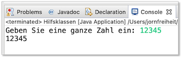
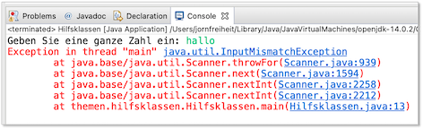
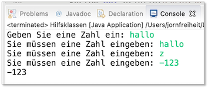
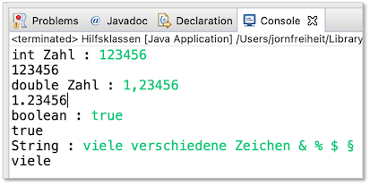
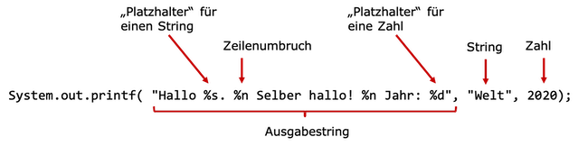

Nützliche Klassen¶
Auf diesen Abschnitt werden wir im Laufe des Semesters immer wieder zurückgreifen. Wir werden die einzelnen Klassen nach und nach verwenden. Der Abschnitt muss (noch) nicht in Gänze gelesen und verstanden werden.
In Java gibt es eine Vielzahl bereits existierender Klassen, auf die wir zugreifen können. Wir werden nach und nach einige davon kennenlernen - aber längst nicht alle. Bis jetzt haben wir nur zwei Klassen direkt verwendet:
- die Klasse
System, die uns eine Schnittstelle zu unserer Konsole (dem Standardausgabegerät zur Verfügung stellt - z.B.System.out.println()) und - die Klasse
String, die einen Datentyp für Zeichenketten darstellt und dafür auch nützliche Methoden mitbringt, die wir uns hier mal genauer anschauen wollen.
Beide Klassen gehören zum Paket java.lang. Dieses Paket muss nicht importiert werden, umn die Klassen daraus zu nutzen. Bei anderen Klassen, die wir im Folgenden betrachten, ist das teilweise anders.
Die Klasse Scanner¶
Wir können derzeit Ausgaben auf die Konsole schreiben. Wir können jedoch noch keine Eingaben tätigen. Das wird sich mit der Verwendung der Klasse Scanner nun ändern.
Die Verwendung dieser Klasse durch uns erfolgt durch
- die Erzeugung eines
Scanner-Objektes - den Aufruf einer passenden Objektmethode, je nachdem, was wir einlesen wollen, ein
int, eindoubleoder einenString.
Erzeugen eines Scanner-Objektes¶
Wir haben oben zwei begriffe verwendet, deren Bedeutung wir erst später kennenlernen: Objekt und Objektmethode. Das soll uns aber nicht aufhalten, einfach einmal ein Scanner-Objekt zu erzeugen:
Scanner sc = new Scanner(System.in);
Hierbei passiert folgendes:
- wir deklarieren uns eine Variable
scvom DatentypScanner, - wir erzeugen mithilfe von
new Scanner()ein neues Objekt vom DatentypScanner, - wir übergeben der Methode, die ein
Scanner-Objekt erzeugt unser Standardeingabegerät (System.in) - das ist die Konsole, d.h. wir wollen unsere Daten über die Konsole einlesen - wir weisen unser neues Objekt (genauer gesagt: eine Referenz auf unser neues Objekt) der Variablen
sczu
Wenn Sie obige Anweisung z.B. in Ihre main()-Methode einfügen, dann stellen Sie fest, dass beide Scanner rot unterstrichen sind. Die Fehlerausgabe ist Scanner cannot be resolved to a type. Das liegt daran, dass die Klasse Scanner nicht zum Standardpaket java.lang gehört, sondern wir sie erst importieren müssen. Das lassen wir aber von unserer IDE erledigen. Wir wählen eines der vorgeschlagenen quick fixes aus, und zwar import Scanner (java.util). Achten Sie darauf, dass dies nicht der erste Vorschlag für ein quick fix ist! Nachdem die entsprechende import-Anweisung (import java.util.Scanner;) eingefügt wurde, ist die Fehlermeldung behoben. Das Programm könnte also so aussehen:
1 2 3 4 5 6 7 8 9 10 11 12 13 | |
Die import-Anweisung (Zeile 3) erfolgt außerhalb und vor der Klassendeklaration.
Aufrufen der passenden Objektmethoden¶
Für ein solches Objekt vom Typ Scanner stehen eine Vielzahl von Methoden zur Verfügung, von denen wir uns nur die folgenden anschauen wollen:
next(): liest einenStringeinnextInt(): liest eininteinnextDouble(): liest eindoubleeinnextBoolean(): liest einbooleanein
Es sei erwähnt, dass es auch noch nextLong(), nextFloat(), nextShort() usw. gibt.
Der Aufruf einer solchen Objektmethode erfolgt stets nach dem Prinzip:
referenzVariable.objektMethode()
Das heißt die Variable, die eine Referenz auf das Objekt hält (bei uns sc), ruft über Punktnotation (mit einem . verbinden) die entsprechende Objektmethode auf. Wir betrachten Beispiele:
1 2 3 4 5 6 7 8 | |
6 sehen Sie den Aufruf der Methode nextInt() für das sc-Objekt, also sc.nextInt(). Die Methode nextInt() gibt die eingegebene Zahl zurück, d.h. der Aufruf der Methode entspricht einer Zahl vom Datentyp int. Diese speichern wir in obigem Beispiel in der Variablen ganzeZahl vom Typ int.
Wenn Sie auf der Konsole dann eine Zahl eingeben, sieht das so aus: 
Was passiert, wenn Sie keine Zahl eingeben? Dann wird eine sogenannte * Exception* geworfen. Eine Exception ist ein Fehler, der zur Laufzeit passiert. Wir werden bald lernen, wie man soclhe Exceptions abfängt, damit es nicht einen solchen "Systemabsturz" gibt. Derzeit müssen wir damit noch leben. Eine solche fehlerhafte Eingabe würde so aussehenen: 
Für diejenigen, die es interessiert, ist hier eine Methode, die einen solchen Fehlerfall abfängt. Das müssen sie jetzt aber noch nicht verstehen - es ist, wie gesagt, nur für eventuelles Interesse:
1 2 3 4 5 6 7 8 9 10 11 12 13 14 15 16 17 18 19 20 21 22 23 24 25 26 27 28 29 30 31 32 33 34 35 | |
Ein möglicher Ablauf wäre dann wie folgt: 
Wir gehen erstmal davon aus, dass die Eingaben korrekt erfolgen und schauen uns noch weitere Beispiele an:
public static void weitereBeispiele()
{
Scanner sc = new Scanner(System.in);
System.out.print("int Zahl : ");
int intNumber = sc.nextInt();
System.out.println(intNumber);
System.out.print("double Zahl : ");
double doubleNumber = sc.nextDouble();
System.out.println(doubleNumber);
System.out.print("boolean : ");
boolean wahrheitswert = sc.nextBoolean();
System.out.println(wahrheitswert);
System.out.print("String : ");
String zeichenkette = sc.next();
System.out.println(zeichenkette);
}
Ein Aufruf der Methode weitereBeispiele(); (z.B. in main()) könnte dann so aussehen:

Beachten Sie:
- Bei der Eingabe einer
double-Zahl müssen Sie anstelle des Punktes ein Komma eingeben. Das hängt mit den ländertypischen Einstellungen von Eclipse zusammen. (Bei manchen ist es vielleicht ein Punkt.) - Wenn Sie ein
Stringeingeben, dann wird bei der Methodenext()nur der String bis zum ersten Leerzeichen eingelesen. (Das lässt sich ändern, aber darauf gehen wir hier nicht näher ein.)
Success
Wir können jetzt Eingaben über unsere Konsole tätigen!
Die Klasse Math¶
Die Klasse Math enthält viele mathematische Funktionen als Methoden. Außerdem ist in ihr z.B. die Konstante PI definiert. Um die Klasse Math zu verwenden, müssen wir sie nicht importieren, denn sie befindet sich im Paket java.lang. Wir müssen auch kein Objekt der Klasse erzeugen, da alle Methoden dieser Klasse Klassenmethoden (also static sind). Um eine Methode dieser Klasse aufzurufen, setzen wir vor die Methode einfach Math.. Wir schauen uns Beispiele an:
double nr1 = 16.0;
double nr2 = Math.sqrt(nr1); // Quadratwurzel
double nr3 = Math.PI * 3.0;
double nr4 = Math.abs(-12.0); // absoluter Betrag
double nr5 = Math.floor(12.3456); // abgeschnitten -> 12
double nr6 = Math.floor(12.9876); // abgeschnitten -> 12
double nr7 = Math.floor(-12.3456); // abgeschnitten -> -13
double nr8 = Math.floor(-12.9876); // abgeschnitten -> -13
double nr9 = Math.pow(2,5); // 2 hoch 5 = 32
Beachten Sie, dass floor() nicht rundet, sondern die nächste ganze Zahl angibt, die kleiner als der Parameterwert ist.
Mithilfe der Math.random()-Methode können Sie sich außerdem double-Zufallszahlen aus dem Bereich 0.0 <= zufallszahl <1.0 erzeugen lassen. Wir werden das aber meistens mithilfe der folgenden Klasse Random erledigen.
Alle Methoden der Klasse Math finden Sie hier.
Die Klasse Random¶
Mithilfe der Klasse Random können wir Zufallszahlen erzeugen. Bei der Klasse Random ist es ähnlich wie bei Scanner:
- wir erzeugen uns ein
Random-Objekt, - die Klasse befindet sich im Paket
java.util, d.h. wir müssen sie importieren, - wir wählen die passende Methode aus, je nachdem, von welchem Datentyp unsere Zufallszahl sein soll
Ein Random-Objekt erzeugen¶
Wir erzwugen uns ein Random-Objekt wie folgt
Random r = new Random();
Um die Klasse Random verwenden zu können, muss sie importiert werden. Hier ein Ausschnitt aus der Klasse, in der wir neben Random auch Scanner verwenden:
1 2 3 4 5 6 7 | |
In Zeile 3 wird die Klasse Random importiert.
Objektemethoden der Klasse Random¶
Die Klasse Random bietet verschiedene Methoden, um Zufallswerte der einzelnen Datentypen zu generieren:
nextDouble(): erzeugt einedouble-Zahl (aus dem Bereich0.0inklusive bis1.0exclusive)nextFloat(): erzeugt einefloat-Zahl (aus dem Bereich0.0inklusive bis1.0exclusive)nextLong(): erzeugt einelong-Zahl (aus (fast) dem Bereich gesamten Bereich vonlong)nextBoolean(): erzeugt einenboolean-Wert zufällig (trueoderfalse)
Wir betrachten jedoch hauptsächlich die Methoden, die uns zufällig einen int-Wert liefern:
nextInt(): erzeugt eineint-Zahl aus dem gesamten Wertebereich vonint- also auch negative Zahlen,nextInt(int bound): erzeugt eineint-Zahl aus dem Bereich0inklusive bisboundexclusive)
nextInt()¶
Schauen wir uns zunächst nextInt() an. Wir implementieren eine Methode, die uns 10 Zufallszahlen mithilfe der Methode nextInt()erzeugt und auf die Konsole ausgibt:
1 2 3 4 5 6 7 8 9 | |
In Zeile 6 sehen wir den Aufruf der Methode nextInt(). Die Referenzvariable r zeigt auf unser Random-Objekt. Für die Referenzvariable wird mithilfe der Punktnotation die Methode nextInt() aufgerufen, also r.nextInt();. Diese Methode gibt eine Zufallszahl zurück, die wir in der Variablen randomNumber speichern.
Ein Aufruf der Methode printIntRandomNumbers(); z.B. in main() kann zu folgender Ausgabe führen (das sind Zufallszahlen, also jeder Aufruf liefert andere Werte):
1362288576
1801089219
-1573362027
56087730
1015233281
1341464232
2112804572
841838154
1460116224
-910734474
nextInt(int bound)¶
Die Methode nextInt() existiert auch parametrisiert, d.h. wir können ihr einen Parameterwert (vom Datentyp int) übergeben. Dieser Wert muss positiv sein! Wenn nicht, dann wird eine IllegalArgumentException geworfen. Die Idee dieses Parameters ist zunächst die, dass wir den Wertebereich einschränken, aus dem die Zufallszahlen erzeugt werden. Angenommen, wir übergeben eine 6, dann werden die Zufallszahlen aus dem Bereich 0, 1, 2, 3, 4, 5 erzeugt. Für nextInt(bound) gilt also, dass eine Zufallszahl aus dem Bereich 0 (inklusive) bis bound(exklusive) (0 <= zufZahl < bound) erzeugt wird.
Wir betrachten folgendes Beispiel:
1 2 3 4 5 6 7 8 9 10 | |
Wir haben die gleiche Methode wie oben, nur dass wir jetzt nicht nextInt(), sondern nextInt(bound) aufrufen (Zeile 7). bound ist vom Typ int und hat den Wert 10 (Zeile 4).
Ein Aufruf der Methode printIntRandomNumbers(); z.B. in main() kann zu folgender Ausgabe führen (das sind Zufallszahlen, also jeder Aufruf liefert andere Werte):
2
8
8
6
8
2
5
9
8
3
Angenommen, wir wollen einen Würfel implementieren. Mit dem Aufruf nextInt(6) würden wir Zahlen zufällig aus dem Bereich [0, ..., 5] erzeugen. Das wäre es noch nicht ganz. Erst, wenn wir zu der erzeugten Zufallszahl jeweils eine 1 hinzuaddieren, "würfeln" wir Zahlen aus dem Bereich [1, ..., 6]. Ein Würfel würde also so implementiert werden:
Random r = new Random();
int wurf = r.nextInt(6) + 1; // zufaellig Zahlen 1 bis 6
Eine generelle Methode, um mithilfe der Methode nextInt(bound) einen beliebigen Bereich aus dem int-Wertebereich zufällig abzudecken, sehe z.B. wie folgt aus:
1 2 3 4 5 6 7 | |
Die Methode ist nicht besonders stabil. Wir müssten eigentlich überprüfen, ob toInclusive größer ist als fromInclusive, aber wir wollen hier zunächst nur das Prinzip erläutern.
Wir "testen" unsere Methode und schauen mal, ob wir Zufallszahlen aus dem Bereich [90, ... , 99] erzeugen:
for(int i=0; i<50; i++)
{
System.out.print(getRandomNumber(90, 99)+" ");
}
Eine mögliche Ausgabe:
96 99 92 98 95 91 95 96 97 93 97 90 94 92 92 94 95 93 99 91 92 95 99 90 91 97 99 93 92 98 91 92 99 90 90 97 95 90 92 97 93 92 94 93 94 90 92 96 96 94
Noch ein "Test", diesmal Zahlen aus dem Bereich [-33 , ... , -10]:
for(int i=0; i<50; i++)
{
System.out.print(getRandomNumber(-33, -10)+" ");
}
Eine mögliche Ausgabe:
-10 -31 -29 -29 -33 -11 -19 -15 -33 -22 -13 -15 -14 -10 -28 -27 -24 -19 -13 -26 -21 -10 -25 -16 -29 -28 -16 -18 -29 -15 -23 -26 -18 -25 -29 -19 -12 -23 -26 -22 -15 -26 -11 -16 -18 -22 -20 -12 -21 -25
Von [-10, ... , 10] geht auch:
for(int i=0; i<50; i++)
{
System.out.print(getRandomNumber(-10, -10)+" ");
}
und unser Würfel klappt auch:
for(int i=0; i<50; i++)
{
System.out.print(getRandomNumber(1, 6)+" ");
}
Die Klasse String¶
Wir haben die Klasse String bereits bei den Datentypen betrachtet. Dort haben wir gesagt, dass String ein anderer Datentyp ist, als die Wertetypen int, boolean, double usw. Bei String handelt es sich um einen Referenztypen. Ein String ist eine Referenz auf ein Objekt. Wenn wir also so etwas haben:
String str = "Hallo FIW!";
str eine Referenzvariable, so wie z.B. r bei Random und sc bei Scanner. Wie bei Random und Scanner gibt es auch für String Methoden, die wir auf die Objekte anwenden können. Einige davon schauen wir uns im Folgenden an. Zunächst untersuchen wir jedoch, was so ein String eigentlich intern ist. Bei einer Zeichenkette handelt es sich um ein Array aus einzelnen Zeichen, also char. Wir wissen noch nicht, was ein Array ist, aber wir bekommen hier eine Vorstellung davon. Angenommen, wir haben den obigen String ("Hallo FIW!"). Intern sieht der so aus:
Ein String besteht also aus einzelnen Zeichen (vom Typ char) und diese sind sogar automatisch "nummeriert". Wir haben einen sogenannten Index. Dieser Index ist eine ganze Zahl (int) und beginnt beim ersten Zeichen mit 0 und läuft dann fortlaufend mit jedem Zeichen eins höher.
Betrachten wir unsere erste Methode für String: die Methode length(). Diese Methode gibt die Länge eines Strings zurück - in unserem Beispiel 10.
String str = "Hallo FIW!";
System.out.println(str.length()); // 10
Sie können die Methode über Punktnotation übrigens auch direkt an das Literal anhängen, also so:
System.out.println("Hallo FIW!".length()); // 10
das gilt für alle der folgenden Objektmethoden. Beachten Sie, dass Länge (length()) eines Strings um 1 größer ist als der größte Indexwert. In der obigen Abbildung sehen wir, dass das Ausrufezeichen (!) mit dem Index 9 nummeriert ist. Das liegt daran, dass der erste Index die 0 ist.
Nun wollen wir den Index verwenden, also die "Nummer" jedes einzelnen Zeichens in einem String. Die Methode charAt(int index) liefrt das Zeichen eines Strings an dem Index index zurück. Also z.B.:
char c = "Hallo FIW!".charAt(6); // 'F'
System.out.println(c); // F
Wir lassen uns einmal alle Zeichen einzeln eines Strings ausgeben. Dazu verwenden wir eine for-Schleife. Die Laufvariable nimmt alle Werte aus dem Index an, d.h. 0 bis kleiner als length():
String str = "Hallo FIW!";
for(int i=0; i<str.length(); i++)
{
char c = str.charAt(i);
System.out.println(c);
}
Das erzeugt folgende Ausgabe:
H
a
l
l
o
F
I
W
!
Verschlüsseln
Wir wissen ja, dass char ein ganzzahliger Datentyp ist. Wir könnten unsere Zeichenkette jetzt verschlüsseln, indem wir einfach zu dem ASCII-Code des jeweiligen Zeichens eine 1 hinzuaddieren. Das machen wir mal:
String str = "Hallo FIW!";
System.out.println(str); // Hallo FIW!
for(int i=0; i<str.length(); i++)
{
char c = str.charAt(i);
c++; // naechstgroesserer ASCII-Code (um 1 addiert)
System.out.print(c); // Ibmmp!GJX"
}
Erzeugt folgende Ausgabe:
Hallo FIW!
Ibmmp!GJX"
Wir können auch einen bestimmten Index erfragen. Die Methode indexOf(char c) gibt den Index zurück, an dem das Zeichen zum ersten Mal im String autaucht. Die Methode lastIndexOf(char c) gibt den Index zurück, an dem das Zeichen zum letzten Mal im String autaucht.
int first = "Hallo FIW!".indexOf('l'); // 2
int last = "Hallo FIW!".lastIndexOf('l'); // 3
System.out.println("l zum ersten Mal : " + first);
System.out.println("l zum letzten Mal : " + last);
Mithilfe des Index können wir auch Teile eines Strings extrahieren. Die Methode substring(int beginIndex) liefert den Teilstring beginnend mit dem Index beginIndex bis zum Ende des Strings zurück. Die Methode substring(int beginIndex, int endIndex) liefert den Teilstring beginnend mit dem Index beginIndex (inklusive) bis zum Index endIndex (exklusive) zurück.
String substr1 = "Hallo FIW!".substring(3); // lo FIW!
String substr2 = "Hallo FIW!".substring(3,7); // lo F
System.out.println(substr1);
System.out.println(substr2);
Mithilfe der Methode toLowerCase() werden alle Buchstaben eines Strings in Kleinbuchstaben umgewandelt.
Mithilfe der Methode toUpperCase() werden alle Buchstaben eines Strings in Großbuchstaben umgewandelt.
String lower = "Hallo FIW!".toLowerCase(); // hallo fiw!
String upper = "Hallo FIW!".toUpperCase(); // HALLO FIW!
System.out.println(lower);
System.out.println(upper);
Um zwei Strings lexikographisch miteinander zu vergleichen, kann die Methode compareTo(String) verwendet werden. Diese gibt ein int zurück. Wir betrachten dazu ein Beispiel:
1 2 3 | |
- In Zeile
1ruft der String"abc"diecompareTo()-Methode auf und vergleicht sich mit dem String"abd". Da"abc""kleiner" ist als"abd", ist der Rückgabewert negativ-1. - In Zeile
2ruft der String"abd"diecompareTo()-Methode auf und vergleicht sich mit dem String"abc". Da"abd""größer" ist als"abc", ist der Rückgabewert positiv1. - In Zeile
3ruft der String"abc"diecompareTo()-Methode auf und vergleicht sich mit dem String"abc". Da beide Strings gleich sind, ist der Rückgabewert0.
Um einen Wert von einem Wertetypen (also die primitiven Datentypen int, boolean, double usw.) in einen String umzuwandeln, stehen die Klassenmethoden valueOf() zur Verfügung. Der Zugriff auf eine solche Methode erfolgt mittels Punktschreibweise und dem Namen der Klasse, also String.valueOf() (es handelt sich um static Methoden). Die Umwandlung erfolgt also wie folgt:
String si9 = String.valueOf(9); // int --> String
String si123 = String.valueOf(123); // int --> String
String sb = String.valueOf(true); // boolean --> String
String sd = String.valueOf(5.5); // double --> String
format()-Methode und printf()¶
In der Übung 2 sollte das kleine 1x1 einaml als Liste und einmal als Matrix ausgegeben werden. Bei beiden war die Formatierung der Ausgabe nicht besonders schön, da die Zahlen unterschiedliche Längen hatten. Schöner wäre es gewesen, die Ausgabe der Zahlen rechtsbündig zu gestalten. Das geht mit der System.out.printf()-Methode. Die printf()-Methode verwendet die format()-Methode von Strings zur Formatierung der Ausgabe. Wir schauen uns zunächst ein einführendes Beispiel an:
1 2 | |
Die format()-Methode in Zeile 1 hat drei Parameter:
- einen Ausgabestring, der Platzhalter enthält
- einen String
"FIW"und - eine
int-Zahl44
Der Ausgabestring enthält sogenannte Platzhalter, nämlich %s für einen String und %d für ein int. Anstelle dieser Platzhalter werden die nach dem Ausgabestring aufgelisteten Werte eingefügt, also für %s wird "FIW" eingesetzt und für %d die 44. Die Ausgabe sieht dann so aus:
in FIW angemeldet : 44 Studentinnen
Das ist zunächst wenig spektakulär. Hier zunächst eine Tabelle mit den wichtigsten Platzhaltern:
| Platzhalter | Eingabetyp | Ausgabe (String) |
|---|---|---|
| %d | int/long/... | ganze Zahl |
| %f | float/double | Gleitkommazahl, Standardnotation |
| %e | float/double | Gleitkommazahl, wiss. Notation |
| %s | String | Zeichenkette |
| %c | char | Buchstabe |
| %n | Zeilenumbruch |
Ein Beispiel sieht also so aus: 
Die eigentliche Formatierung erfolgt durch die Angabe der vorgesehenen Breite für einen Ausgabewert und ob dieser Wert rechtsbündig oder linksbündig dargestellt werden soll. Die allgemeine Syntax für einen solchen Platzhalter ist wie folgt:
% [Schalter] [Breite] . [Genauigkeit] Typ
Dabei sind:
%: Formatierungsausdruck beginntSchalter(optional): verändert das Format der Ausgabe (Minuszeichen (-) = linksbündige Ausgabe)Breite: Anzahl der ausgegebenen ZeichenGenauigkeit(optional): NachkommastellenTyp: Ausgabetyp (s(String): Zeichenkette kleingeschrieben,S: Zeichenkette großgeschrieben,d(decimal): Ganzzahl,f(floating-point): Nachkommazahl)
Dazu ein Beispiel:
public static void createTable(int rows)
{
Random r = new Random();
int number1 = 0;
int number2 = 0;
System.out.println(" a | b | a + b | a - b | a * b | a / b | a % b ");
System.out.println("----------------------------------------------------------------");
for(int i=0; i<rows; i++)
{
number1 = r.nextInt(100)+1;
number2 = r.nextInt(100)+1;
System.out.printf("%4d | %4d | %5d | %5d |%7d | %5d | %4d %n",
number1, number2, number1+number2, number1-number2, number1*number2,
number1/number2, number1%number2);
}
}
Bei Aufruf von createTable(8); erreichen wir zum Beispiel folgende Ausgabe:
a | b | a + b | a - b | a * b | a / b | a % b
----------------------------------------------------------------
4 | 39 | 43 | -35 | 156 | 0 | 4
60 | 2 | 62 | 58 | 120 | 30 | 0
93 | 60 | 153 | 33 | 5580 | 1 | 33
8 | 68 | 76 | -60 | 544 | 0 | 8
80 | 82 | 162 | -2 | 6560 | 0 | 80
31 | 10 | 41 | 21 | 310 | 3 | 1
7 | 30 | 37 | -23 | 210 | 0 | 7
54 | 12 | 66 | 42 | 648 | 4 | 6
Die Zahlen erscheinen also alle geordnet untereinander und rechtsbündig. Wie gesagt, System.out.printf() und String.format() funktionieren exakt gleich, da printf() format() verwendet. Weitere Beispiele für Schalter und ihre Breitenangaben:
String output;
output = String.format("|%10d|", 1234); // | 1234|
output = String.format("|%-10d|", 1234); // |1234 |
output = String.format("|%010d|", 1234); // |0000001234|
output = String.format("|%+10d|", 1234); // | +1234|
output = String.format("|%,10d|", 1234); // | 1.234|
output = String.format("|%10.2f|", 1234.567); // | 1234,57|
output = String.format("|%-10.2f|", 1234.567); // |1234,57 |
output = String.format("|%5.2f|", 1234.567); // |1234,57|
output = String.format("|%15s|", "Hallo FIW!"); // | Hallo FIW!|
output = String.format("|%-15s|", "Hallo FIW!"); // |Hallo FIW! |
output = String.format("|%.7s|", "Hallo FIW!"); // |Hallo F|
Unsere beiden Methoden des kleinen 1x1 aus Übung 2 hätten dann auch eine schönere Ausgabe:
public static void printTimesTables(int nr1, int nr2)
{
for(int faktor1 = 1; faktor1<=nr1; faktor1++)
{
for(int faktor2 = 1; faktor2<=nr2; faktor2++)
{
int produkt = faktor1 * faktor2;
System.out.printf("%2d * %2d = %3d %n", faktor1, faktor2, produkt);
}
System.out.println();
}
}
public static void printTimesMatrix(int nr1, int nr2)
{
for(int faktor1 = 1; faktor1 <= nr1; faktor1++)
{
for(int faktor2 = 1; faktor2 <= nr2; faktor2++)
{
int produkt = faktor1 * faktor2;
System.out.printf("%4d", produkt);
}
System.out.println();
}
}
Nämlich so:
----- Aufgabe 1 ------
1 * 1 = 1
1 * 2 = 2
1 * 3 = 3
1 * 4 = 4
1 * 5 = 5
1 * 6 = 6
1 * 7 = 7
1 * 8 = 8
1 * 9 = 9
1 * 10 = 10
2 * 1 = 2
2 * 2 = 4
2 * 3 = 6
2 * 4 = 8
2 * 5 = 10
2 * 6 = 12
2 * 7 = 14
2 * 8 = 16
2 * 9 = 18
2 * 10 = 20
3 * 1 = 3
3 * 2 = 6
3 * 3 = 9
3 * 4 = 12
3 * 5 = 15
3 * 6 = 18
3 * 7 = 21
3 * 8 = 24
3 * 9 = 27
3 * 10 = 30
4 * 1 = 4
4 * 2 = 8
4 * 3 = 12
4 * 4 = 16
4 * 5 = 20
4 * 6 = 24
4 * 7 = 28
4 * 8 = 32
4 * 9 = 36
4 * 10 = 40
5 * 1 = 5
5 * 2 = 10
5 * 3 = 15
5 * 4 = 20
5 * 5 = 25
5 * 6 = 30
5 * 7 = 35
5 * 8 = 40
5 * 9 = 45
5 * 10 = 50
6 * 1 = 6
6 * 2 = 12
6 * 3 = 18
6 * 4 = 24
6 * 5 = 30
6 * 6 = 36
6 * 7 = 42
6 * 8 = 48
6 * 9 = 54
6 * 10 = 60
7 * 1 = 7
7 * 2 = 14
7 * 3 = 21
7 * 4 = 28
7 * 5 = 35
7 * 6 = 42
7 * 7 = 49
7 * 8 = 56
7 * 9 = 63
7 * 10 = 70
8 * 1 = 8
8 * 2 = 16
8 * 3 = 24
8 * 4 = 32
8 * 5 = 40
8 * 6 = 48
8 * 7 = 56
8 * 8 = 64
8 * 9 = 72
8 * 10 = 80
9 * 1 = 9
9 * 2 = 18
9 * 3 = 27
9 * 4 = 36
9 * 5 = 45
9 * 6 = 54
9 * 7 = 63
9 * 8 = 72
9 * 9 = 81
9 * 10 = 90
10 * 1 = 10
10 * 2 = 20
10 * 3 = 30
10 * 4 = 40
10 * 5 = 50
10 * 6 = 60
10 * 7 = 70
10 * 8 = 80
10 * 9 = 90
10 * 10 = 100
----- Aufgabe 2 ------
1 2 3 4 5 6 7 8 9 10
2 4 6 8 10 12 14 16 18 20
3 6 9 12 15 18 21 24 27 30
4 8 12 16 20 24 28 32 36 40
5 10 15 20 25 30 35 40 45 50
6 12 18 24 30 36 42 48 54 60
7 14 21 28 35 42 49 56 63 70
8 16 24 32 40 48 56 64 72 80
9 18 27 36 45 54 63 72 81 90
10 20 30 40 50 60 70 80 90 100
Formatierung von Gleikommazahlen¶
Um Gleitkommazahlen in der Standardnotation (nicht wissenschaftliche Notation) formatiert auszugeben, wird der Platzhalter %f verwendet. Die allgemeine Syntax ist also
% [Schalter] [Breite] . [Genauigkeit] f
Der Schalter kann - sein, dann wird die Zahl linksbündig dargestellt. Ist kein Schalter angegeben, erfolgt die Ausgabe rechtsbündig. Die Breite beschreibt die gesamte Anzahl der Stellen für die Zahl. Die Breite enthält insbesondere auch eine Stelle für das Komma und die Anzahl der Stellen für die Genauigkeit. Die Genauigkeit gibt die Anzahl der Nachkommastellen an.
Angenommen, der Plathalter lautet %7.2f. Dann werden insgesamt sieben Stellen für die gesamte Zahl reserviert, inklusive dem Komma und den 2 Nachkommastellen, also
_ _ _ _ , _ _
Wenn die Gesamtlänge beliebig ist, Sie aber nur genau 2 Nachkommastellen haben möchten, dann können Sie auch %.2f als Platzhalter angeben. Für eine Nachkommastelle %.1f. Die Nachkommastellen werden sogar gerundet.
Hier nochmal einige Beispiele von oben nur für Gleikommazahlen:
1 2 3 4 | |
Beachten Sie auch das letzte Beispiel (Zeile 4). Es wurden nur insgesamt 5 Stellen für die gesamte Zahl reserviert. Davon benötigen wir alleine 2 Stellen für die Nachkommastellen und 1 Stelle für das Komma. Die Vorkommastellen hätten also nur 2Stellen Platz. Vorne wird die Zahl aber nie abgeschnitten. Sollte der reservierte Platz für die Vorkommastellen nicht ausreichen, wird der Vorkommabereich trotzdem vollständig dargestellt. Es kann also trotz der Formatierung zu Verzerrungen in der Ausgabe kommen!